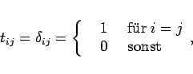
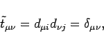
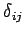

Inhalt Index DeskTop Bronstein

 Lineare Algebra Tensoren Tensoren mit speziellen Eigenschaften Invariante Tensoren
Lineare Algebra Tensoren Tensoren mit speziellen Eigenschaften Invariante Tensoren


Wählt man als Elemente tij eines 2stufigen Tensors das KRONECKER-Symbol, d.h.
|  | (4.78a) |
dann folgt aus dem Transformationsgesetz (4.70b) im Falle einer Drehung des Koordinatensystems unter Beachtung von (4.67c)
|  | (4.78b) |
d.h., die Elemente sind drehungsinvariant. Paßt man sie so in ein Koordinatensystem ein, daß sie unabhängig von der Wahl des Ursprungs, also auch translationsinvariant sind, dann bilden die Zahlen  einen invarianten Tensor 2. Stufe, den sogenannten Deltatensor.